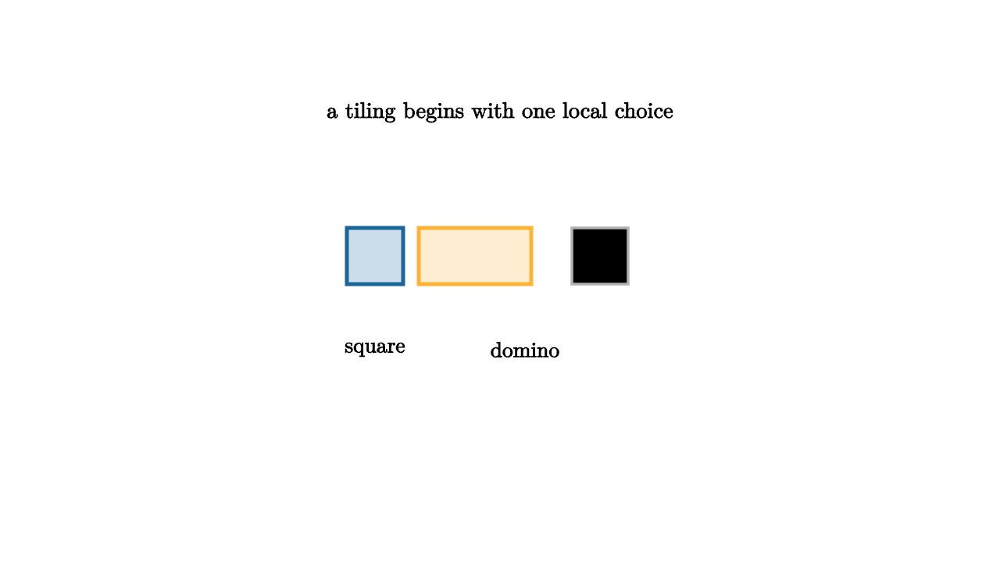

Recursions Become Rational Functions
A recurrence counts by relating today to earlier days. Fibonacci numbers count tilings of a length n board by squares and dominoes. A tiling either begins with a square, leaving length n - 1, or begins with a domino, leaving length n - 2. So F_n = F_{n-1} + F_{n-2}, with suitable initial values.
Generating functions turn that recursive story into algebra. Let $F(x)=F_0+F_1x+F_2x^2+\cdots$. Multiplying by x shifts the sequence by one place. Multiplying by $x^2$ shifts it by two. The recurrence then says $F(x)$ is built from $xF(x)$, $x^2F(x)$, and initial correction terms. Solving gives a rational function.

source
mesh scene = [
center{1.35u} Text("a tiling begins with one local choice", 0.64),
center{[-1.0, 0.2, 0]} fill{alpha{0.22} BLUE} stroke{BLUE, 3} Rect([0.45, 0.45]),
center{[-0.2, 0.2, 0]} fill{alpha{0.22} ORANGE} stroke{ORANGE, 3} Rect([0.9, 0.45]),
center{[0.8, 0.2, 0]} stroke{LIGHT_GRAY, 2} Rect([0.45, 0.45]),
center{[-1.0, -0.55, 0]} Text("square", 0.62),
center{[0.2, -0.55, 0]} Text("domino", 0.62)
]For Fibonacci tilings with F_0 = 1 and F_1 = 1, the equation is F(x) = 1 + xF(x) + x^2F(x). Therefore F(x) = 1/(1 - x - x^2). The denominator stores the recurrence. The coefficients store the counts.
source
let Tile = |x, w, col| center{[x, 0, 0]} fill{alpha{0.22} col} stroke{col, 2} Rect([w, 0.36])
let Board = |n, col| block {
for (i in range(0, n)) {
. Tile(-1.4 + i * 0.48, 0.42, col)
}
}
"Shift"
mesh title = center{1.35u} Text("recurrences shift series", 0.66)
mesh board = block {
. Board(4, BLUE)
. center{1.12d} Text("xF(x) shifts by one cell", 0.62)
}
play Fade(0.7)
"Longer Board"
board = block {
. Board(6, TEAL)
. Tile(-1.4 + 6 * 0.48, 0.84, ORANGE)
. center{1.12d} Text("a two-cell tile shifts the count by two", 0.62)
}
play Trans(1.0)Rational generating functions appear whenever a counting problem has finite memory. If the next step depends on only a bounded state, the generating function often satisfies a finite linear system. Solve the system, and rational functions emerge. This includes many tiling problems, walks on finite automata, regular languages, and constrained strings.
For example, count binary strings with no adjacent 1s. A valid string of length n either ends in 0 after any valid string of length n - 1, or ends in 01 after any valid string of length n - 2. The same Fibonacci recurrence appears. A different-looking problem has the same generating function because its structural choices have the same memory.
The rational form also gives asymptotics. The growth of coefficients is controlled by singularities of the generating function. For 1/(1 - x - x^2), the nearest singularity is tied to the golden ratio, so Fibonacci counts grow like powers of that ratio. This is one reason generating functions connect elementary counting to analysis.
There is a practical workflow. First, define the counted objects and size. Second, split objects by their first step, last step, or state. Third, translate the split into equations for generating functions. Fourth, solve algebraically. Fifth, read coefficients exactly or estimate their growth.
The third lesson completes the first arc. Addition models alternatives, multiplication models assembled parts, geometric series model repetition, and shifts model recurrence. Generating functions let a combinatorial problem become an algebraic object, then bring algebra back to answer the original count.